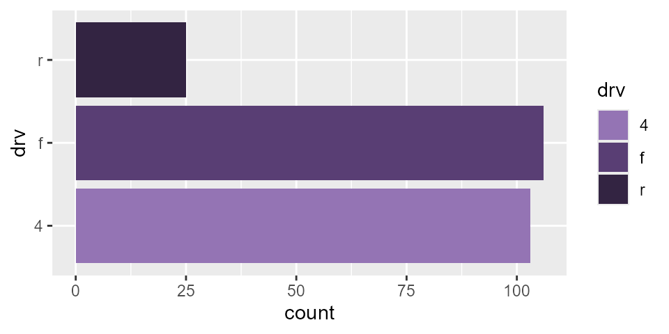
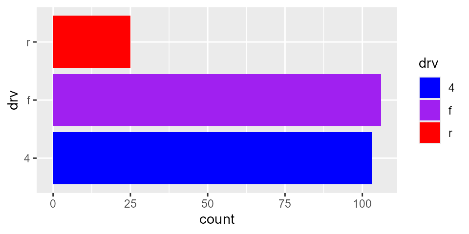
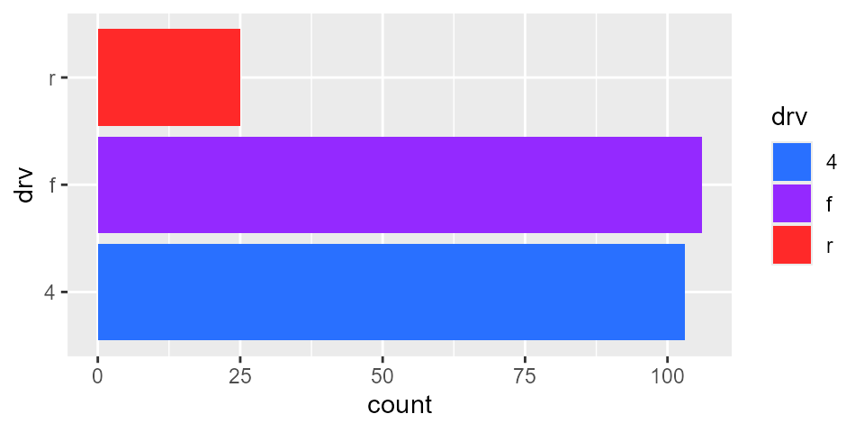
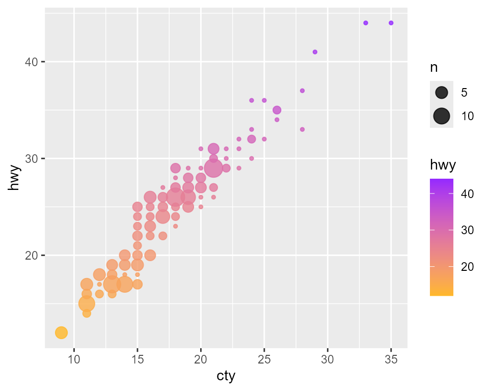

Trying to put colors together in R can difficult. I think most people
search google for ggplot2 colors and end up looking at some
funky
image of all the color names that work in R. These colors are from
the X11
colors that were developed in the 1980s. Unfortunately, they have
inconsistent names and the lightness/saturation are all over the place.
Using simplecolors gives you access to a smaller,
consistent set of colors. It is similar to the palette tool you might be
used to with Microsoft Word or Tableau. You use these colors in the same
way you would use "red" or "blue" to color
text or chart elements. Here are the 165 colors that are available
{kind=link}

The sc() function
This function sc() stands for
simplecolors. In base R, you would
call the colors you need as c("green", "blue")
In simplecolors it is very similar but with
sc() instead sc("green", "blue")
The key is that you can add modifiers
sc("brightgreen2", "mutedblue3")
The naming convention is standardized: there are 4 types of saturation, 8 hues, and 5 levels of lightness plus a greyscale. To use a color, just combine the 3 parts:
| optional saturation | hue | lightness |
|---|---|---|
| bright | red | 1 |
| “” | orange | 2 |
| muted | yellow | 3 |
| dull | green | 4 |
| teal | 5 | |
| blue | ||
| violet | ||
| grey |
By default, the outputs are hex codes and simplecolors
can be used anywhere you can use a hex code.
sc("brightgreen2", "mutedblue3")
#> "#8FFF8F" "#5E82C9"For the rest of this tutorial I’m going to show you how to use this
package to enhance your color choices in ggplot2. First,
let’s look at the output of base R colors. Although the terms
“lightblue” and “navyblue” are common ways to talk about the lightness
of blue, when we call them as raw colors they don’t have the same “feel”
as they go light to dark.
library(ggplot2)
library(simplecolors)
p <-
ggplot(mpg, aes(y = drv, fill = drv)) +
geom_bar()
p + scale_fill_manual(values = c("lightblue", "blue", "navyblue"))
Let’s see what it looks like with the sc() function
p + scale_fill_manual(values = sc("blue2", "blue3", "blue4"))Again, these are just hex codes. The above code is the same as writing
p + scale_fill_manual(values = c("#9DB9F1", "#4479E4", "#16439C"))
sc_blue(), sc_green() & friends
Each hue has it’s own helper function. Our last example can be
simplified using sc_blue()
p + scale_fill_manual(values = sc_blue(light = 2:4))
Like sc(), these helper functions returns hex codes
sc_blue(light = 2:4)
#> "#9DB9F1" "#4479E4" "#16439C"and in each of these you can adjust the lightness and saturation
p + scale_fill_manual(values = sc_violet(light = 3:5, sat = "dull"))
sc_across()
You can also go across palettes. Let’s use base R colors again
p + scale_fill_manual(values = c("blue", "purple", "red"))
We could call them with sc() as
sc("blue", "violet", "red") but we can also call them with
the first letter of each color using sc_across()
p + scale_fill_manual(values = sc_across("BVR"))
We can brighten or dull the saturation with the argument
sat = ...
p + scale_fill_manual(values = sc_across(palette = "BVR", sat = "bright"))
and we can lighten or darken with the argument
light = ...
p + scale_fill_manual(values = sc_across(palette = "BVR", light = 4))
I tried to keep the first initial for each color unique. For example, I chose “violet” over “purple” so it didn’t compete with “pink” but there was no getting around “green” and “grey”. For this reason, you must call grey with “Gy”
p + scale_fill_manual(values = sc_across(palette = "BGyR"))
You can also use the simplecolors to make a gradient
library(dplyr)
ggplot(mpg, aes(cty, hwy, color = hwy)) +
geom_count(alpha = 0.8) +
scale_color_gradient(
low = sc("brightorange3"),
high = sc("brightviolet3")
)
Other outputs
For the palettes (sc_green(), sc_across(),
etc.), you can get more info about the colors using the
return = ... argument.
sc_green(return = "plot")
sc_across(palette = "RTVGy", light = 4, sat = "muted", return = "plot")
or a table
sc_pink(return = "table")#> # A tibble: 4 × 2
#> color_name hex
#> <chr> <chr>
#> 1 pink2 #F19DF1
#> 2 pink3 #E444E4
#> 3 pink4 #9C169C
#> 4 pink5 #590D59All the colors
At anytime, you can see all of the colors using
show_colors()
show_colors(labels = TRUE)